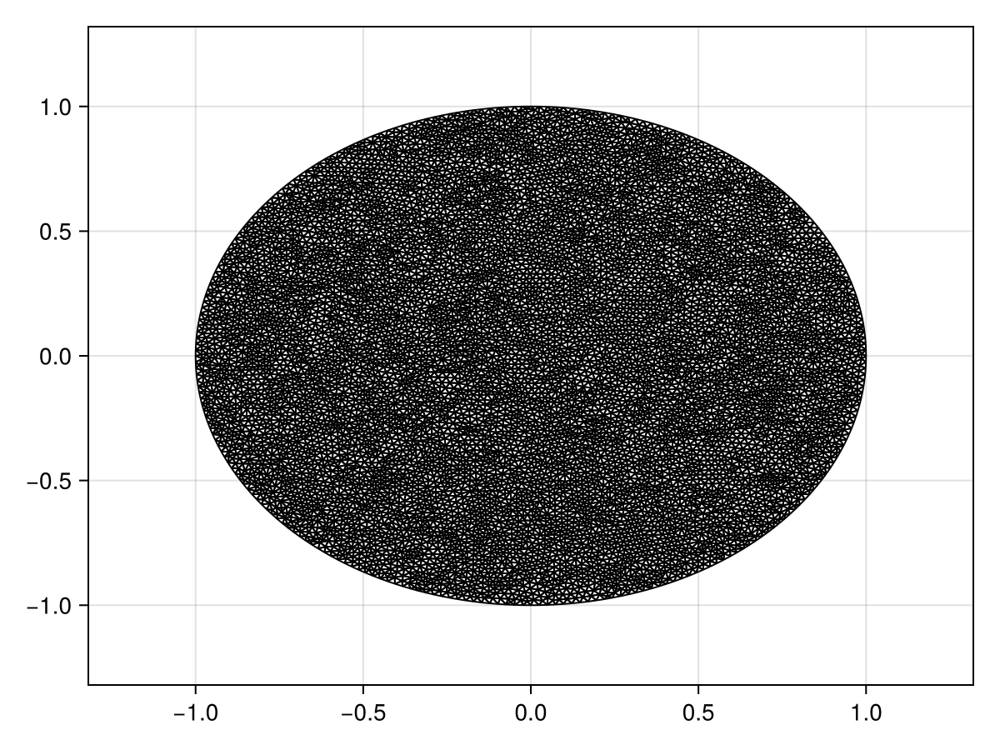

Reaction-Diffusion Equation with a Time-dependent Dirichlet Boundary Condition on a Disk
In this tutorial, we consider a reaction-diffusion equation on a disk with a boundary condition of the form $\mathrm du/\mathrm dt = u$:
\[\begin{equation*} \begin{aligned} \pdv{u(r, \theta, t)}{t} &= \div[u\grad u] + u(1-u) & 0<r<1,\,0<\theta<2\pi,\\[6pt] \dv{u(1, \theta, t)}{t} &= u(1,\theta,t) & 0<\theta<2\pi,\,t>0,\\[6pt] u(r,\theta,0) &= \sqrt{I_0(\sqrt{2}r)} & 0<r<1,\,0<\theta<2\pi, \end{aligned} \end{equation*}\]
where $I_0$ is the modified Bessel function of the first kind of order zero. For this problem the diffusion function is $D(\vb x, t, u) = u$ and the source function is $R(\vb x, t, u) = u(1-u)$, or equivalently the force function is
\[\vb q(\vb x, t, \alpha,\beta,\gamma) = \left(-\alpha(\alpha x + \beta y + \gamma), -\beta(\alpha x + \beta y + \gamma)\right)^{\mkern-1.5mu\mathsf{T}}.\]
As usual, we start by generating the mesh.
using FiniteVolumeMethod, DelaunayTriangulation, ElasticArrays
r = 1.0
circle = CircularArc((0.0, r), (0.0, r), (0.0, 0.0))
points = NTuple{2, Float64}[]
boundary_nodes = [circle]
tri = triangulate(points; boundary_nodes)
A = get_area(tri)
refine!(tri; max_area = 1e-4A)
mesh = FVMGeometry(tri)FVMGeometry with 8910 control volumes, 17562 triangles, and 26471 edgesusing CairoMakie
triplot(tri)
Now we define the boundary conditions and the PDE.
using Bessels
BCs = BoundaryConditions(mesh, (x, y, t, u, p) -> u, Dudt)BoundaryConditions with 1 boundary condition with type Dudtf = (x, y) -> sqrt(besseli(0.0, sqrt(2) * sqrt(x^2 + y^2)))
D = (x, y, t, u, p) -> u
R = (x, y, t, u, p) -> u * (1 - u)
initial_condition = [f(x, y) for (x, y) in DelaunayTriangulation.each_point(tri)]
final_time = 0.10
prob = FVMProblem(mesh, BCs;
diffusion_function = D,
source_function = R,
final_time,
initial_condition)FVMProblem with 8910 nodes and time span (0.0, 0.1)We can now solve.
using OrdinaryDiffEq, LinearSolve
alg = FBDF(linsolve = UMFPACKFactorization(), autodiff = AutoFiniteDiff())
sol = solve(prob, alg, saveat = 0.01)retcode: Success
Interpolation: 1st order linear
t: 11-element Vector{Float64}:
0.0
0.01
0.02
0.03
0.04
0.05
0.06
0.07
0.08
0.09
0.1
u: 11-element Vector{Vector{Float64}}:
[1.2514323512504983, 1.2514323512504983, 1.2514323512504983, 1.2514323512504983, 1.2514323512504983, 1.2514323512504983, 1.2514323512504983, 1.2514323512504983, 1.0, 1.0732643239064652 … 1.1958282054441616, 1.1017257982015618, 1.1197411591945516, 1.1815545533487721, 1.1392134144401553, 1.101394848580181, 1.1507868819093667, 1.1440729723179572, 1.2163013693003695, 1.0245124769826044]
[1.2640096982895532, 1.2640096982895532, 1.2640096982895532, 1.2640096982895532, 1.2640096982895532, 1.2640096982895532, 1.2640096982895532, 1.2640096982895532, 1.0100676931671644, 1.0840621844968747 … 1.207843072663244, 1.1127982241751497, 1.1310015948633367, 1.1934462845770994, 1.1506706745350808, 1.112477148604063, 1.1623638201801128, 1.15557954811002, 1.2285419535950595, 1.0348075566912436]
[1.2767142300327716, 1.2767142300327716, 1.2767142300327716, 1.2767142300327716, 1.2767142300327716, 1.2767142300327716, 1.2767142300327716, 1.2767142300327716, 1.0202203624428985, 1.0949583123597624 … 1.2199836878702888, 1.1239849803583208, 1.1423712666801247, 1.2054447615314272, 1.1622391528506772, 1.1236618246568995, 1.1740503549400287, 1.1671968523912268, 1.2408924262407892, 1.0452091171130242]
[1.2895472518884872, 1.2895472518884872, 1.2895472518884872, 1.2895472518884872, 1.2895472518884872, 1.2895472518884872, 1.2895472518884872, 1.2895472518884872, 1.0304752445968548, 1.1059653897600357 … 1.2322487668945226, 1.1352840168415197, 1.1538547536553723, 1.2175615879995152, 1.1739221874980288, 1.134956127022242, 1.1858512033537927, 1.1789299119596495, 1.2533652747987607, 1.0557156330562198]
[1.3025085666771197, 1.3025085666771197, 1.3025085666771197, 1.3025085666771197, 1.3025085666771197, 1.3025085666771197, 1.3025085666771197, 1.3025085666771197, 1.0408332997775696, 1.1170836098380161 … 1.2446361534207, 1.14669545015802, 1.1654521107322295, 1.2297977193932474, 1.1857208783123414, 1.146361409992615, 1.1977671401449084, 1.190778612878129, 1.2659600782124052, 1.0663266816077404]
[1.3156008184221517, 1.3156008184221517, 1.3156008184221517, 1.3156008184221517, 1.3156008184221517, 1.3156008184221517, 1.3156008184221517, 1.3156008184221517, 1.0512971636652315, 1.128314548871307 … 1.257146458342317, 1.1582222745196844, 1.1771666944660721, 1.2421581234847563, 1.1976396572529626, 1.1578832228076748, 1.2098040719800345, 1.2027467762845963, 1.2786815255980213, 1.0770447888211274]
[1.3288250601860576, 1.3288250601860576, 1.3288250601860576, 1.3288250601860576, 1.3288250601860576, 1.3288250601860576, 1.3288250601860576, 1.3288250601860576, 1.061867885999346, 1.1396588346602314 … 1.2697799249662205, 1.169865682462122, 1.188999841706795, 1.2546447788398367, 1.2096802894820078, 1.1695237756202763, 1.2219643513681604, 1.2148359240630255, 1.2915314845382706, 1.0878709607737531]
[1.3421824292117048, 1.3421824292117048, 1.3421824292117048, 1.3421824292117048, 1.3421824292117048, 1.3421824292117048, 1.3421824292117048, 1.3421824292117048, 1.072546600434177, 1.1511171451906208 … 1.2825368160488777, 1.1816269618506285, 1.2009529961702674, 1.2672598221881581, 1.2218446812662662, 1.1812854552599077, 1.234250518874666, 1.227047699754741, 1.3045119719078515, 1.0988062839674544]
[1.3556741935725403, 1.3556741935725403, 1.3556741935725403, 1.3556741935725403, 1.3556741935725403, 1.3556741935725403, 1.3556741935725403, 1.3556741935725403, 1.083334571041728, 1.1626902364450857 … 1.2954174245747592, 1.1935075487089686, 1.2130277676601737, 1.2800056360728302, 1.23413495817308, 1.1931709231414553, 1.2466654073363992, 1.2393839359771825, 1.317625236606558, 1.1098519698973042]
[1.3693016213420095, 1.3693016213420095, 1.3693016213420095, 1.3693016213420095, 1.3693016213420095, 1.3693016213420095, 1.3693016213420095, 1.3693016213420095, 1.0942330618940017, 1.1743788644062352 … 1.308422043528334, 1.205508879060907, 1.225225765980199, 1.2928846030369623, 1.2465532457697899, 1.2051828406798044, 1.2592118495902067, 1.2518464653477896, 1.3308735275341839, 1.1210092300583747]
[1.3830650824015467, 1.3830650824015467, 1.3830650824015467, 1.3830650824015467, 1.3830650824015467, 1.3830650824015467, 1.3830650824015467, 1.3830650824015467, 1.1052096893563335, 1.186176552519245 … 1.3216095985783285, 1.2176208074274288, 1.2375356423972728, 1.3058500065036653, 1.2590555585370642, 1.2172642498859223, 1.2718466936997317, 1.2644256986377722, 1.3442452573599237, 1.13228357125604]fig = Figure(fontsize = 38)
for (i, j) in zip(1:3, (1, 6, 11))
ax = Axis(fig[1, i], width = 600, height = 600,
xlabel = "x", ylabel = "y",
title = "t = $(sol.t[j])",
titlealign = :left)
tricontourf!(ax, tri, sol.u[j], levels = 1:0.01:1.4, colormap = :matter)
tightlimits!(ax)
end
resize_to_layout!(fig)
figJust the code
An uncommented version of this example is given below. You can view the source code for this file here.
using FiniteVolumeMethod, DelaunayTriangulation, ElasticArrays
r = 1.0
circle = CircularArc((0.0, r), (0.0, r), (0.0, 0.0))
points = NTuple{2, Float64}[]
boundary_nodes = [circle]
tri = triangulate(points; boundary_nodes)
A = get_area(tri)
refine!(tri; max_area = 1e-4A)
mesh = FVMGeometry(tri)
using CairoMakie
triplot(tri)
using Bessels
BCs = BoundaryConditions(mesh, (x, y, t, u, p) -> u, Dudt)
f = (x, y) -> sqrt(besseli(0.0, sqrt(2) * sqrt(x^2 + y^2)))
D = (x, y, t, u, p) -> u
R = (x, y, t, u, p) -> u * (1 - u)
initial_condition = [f(x, y) for (x, y) in DelaunayTriangulation.each_point(tri)]
final_time = 0.10
prob = FVMProblem(mesh, BCs;
diffusion_function = D,
source_function = R,
final_time,
initial_condition)
using OrdinaryDiffEq, LinearSolve
alg = FBDF(linsolve = UMFPACKFactorization(), autodiff = AutoFiniteDiff())
sol = solve(prob, alg, saveat = 0.01)
fig = Figure(fontsize = 38)
for (i, j) in zip(1:3, (1, 6, 11))
ax = Axis(fig[1, i], width = 600, height = 600,
xlabel = "x", ylabel = "y",
title = "t = $(sol.t[j])",
titlealign = :left)
tricontourf!(ax, tri, sol.u[j], levels = 1:0.01:1.4, colormap = :matter)
tightlimits!(ax)
end
resize_to_layout!(fig)
figThis page was generated using Literate.jl.